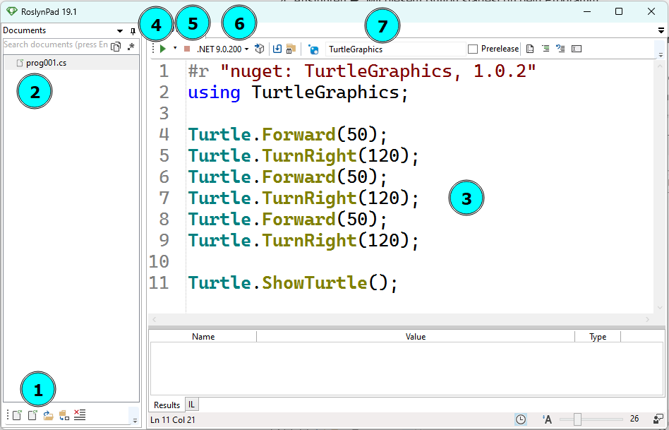

Einführung
In diesem Kurs lernst du, wie du einen Computer programmieren kannst. Dabei gehen wir davon aus, dass du noch kein Vorwissen mitbringst, und werden dir schrittweise alles erklären, was du dazu brauchst.
Was heißt "Programmieren" überhaupt?
Programmieren heißt, einer Maschine Anweisungen zu erteilen und sie damit zu steuern. Die erste solche Maschine, die du steuerst, ist eine kleine Schildkröte auf dem Bildschirm: Die Turtle. Die Schildkröte versteht verschiedene Anweisungen um sich zu bewegen, zu zeichnen oder sich zu verstecken. Welche Anweisungen existieren und wie diese Anweisungen geschrieben werden müssen, ist in einer Programmiersprache definiert.
Die Programmiersprache, die wir in diesem Kurs lernen werden, ist C#. C# ist eine moderne, objektorientierte Programmiersprache, die besonders für die Entwicklung von Windows-Anwendungen und Spielen beliebt ist. Sie wird häufig in der Webentwicklung und für Unternehmenssoftware eingesetzt und zeichnet sich durch ihre hohe Leistungsfähigkeit aus. Des Weiteren gibt es eine große Schnittmenge zu anderen Programmiersprachen, wie Java, C, C++ oder JavaScript, was das Erlernen dieser Sprachen später einfach möglich macht.
C# mit Roslynpad
Wir werden mit einer einfachen Umgebung starten, um C# zu programmieren. Diese Umgebung benötigt aber einige Schritt um sie zu installieren. Befolge folgende Schritte um die Anwendung zu installieren:
Installation
Zur Installation benötigst du einen aktuellen Computer mit dem Betriebssystem Windows.
Führe folgende Schritte der Reihe nach aus, um Roslynpad zu installieren:
- Download und Installation der .Net SDK Download
- Download und Installation des .Net Frameworks Download
- Download von Roslynpad Download
- Entpacken von RoslynPad
- Rechtsklick auf die Datei: RoslynPad-windows-x64.zip
- “Alle Extrahieren” wählen oder “Weitere Optionen” und dann “Alle Extrahieren” wählen
- Ordner öffnen und Verknüpfung zu RoslynPad.exe auf dem Desktop erstellen
- RoslynPad starten und konfigurieren
- Documents fixieren
- x64 wählen und als Standard setzen
- BulmeSharp laden
- Minimalprogramm testen
#r "nuget: BulmeSharp, 0.10.1"
using BulmeSharp;
Turtle.fd(50);
Turtle.rt(120);
Turtle.fd(50);
Turtle.rt(120);
Turtle.fd(50);
Turtle.rt(120);
Turtle.showTurtle();
Tipp: Die gesamte Installation wird in diesem üì∫ Video vorgezeigt.
Einführung in die Oberfläche
Die Oberfläche ist einfach gestaltet und speziell für Einsteiger entwickelt worden. Sie besteht aus folgenden sechs Bereichen.
- Neue Datei: Hier kannst du eine neue Dateien anlegen
- Dateiübersicht: Hier siehst du alle Dateien, die du angelegt hast. Mit Doppelklick auf eine Datei öffnest du die entsprechende Datei
- Codeeingabe: Hier gibst du den C#-Code ein
- Ausführen ▶: Mit diesem Button startest du dein Programm
- Beenden ■: Mit diesem Button beendest du dein Programm vorzeitig
- Framework: Hier muss das .Net Framework ausgewählt werden. Wir nehmen stets x64 und setzen es mit dem Button daneben gleich als Standard (Default).
- NuGet Bibliotheken: Hier binden wir zusätzliche Bibliotheken ein. Bibliotheken enthalten vorgefertigte Programmteile, normalerweise nicht im Standardumfang einer Programmiersprache enthalten sind. Meistens verwenden wir die BulmeSharp Bibliothek, da diese die Turtle enthält.

üìù Übung 1
Gib den Programmcode aus der oberen Grafik in RoslynPad ein und klicke auf den "Ausführen"-Knopf. Es sollte die gleiche Ausgabe erscheinen wie in der Grafik.
Tipps:
- Achte auf Groß- und Kleinschreibung
- Achte darauf, daß Anweisungen mit einem Strichpunkt (Semikolon) ageschlossen werden müssen
- Achte auf die richtigen Klammern! Es werden in dem Beispiel runde Klammern "(" und ")" benutzt. Eckige "[", "]" oder geschwungene "{", "}" Klammern bedeuten etwas anderes und funktionieren nicht!
- Wenn du einen Tippfehler gemacht hast, also beispielsweise statt
Turtle.showTurtle();den TextTörtle.showTrutel();geschrieben hast, erscheint eine Fehlermeldung im unteren Teil des Ausgabefensters. Versuche diese zu verstehen und den Fehler zu beheben. - Beachte folgende Regel beim Programmieren: Probiere alles selber aus! Je mehr Programme du selber schreibst, umso mehr wirst du verstehen und beherrschen.
- Verwende Shortcuts (Tastenkombinationen) um Zeit zu sparen:
- STRG + S ➡ Speichern
- STRG + C ➡ Kopieren
- STRG + V ➡ Einfügen
üß≠ Zusammenfassung
Wir haben unsere erste Umgebung zum Programmieren kennengelernt und ein erstes Programm eingetippt. Im nächsten Kapitel erfährst du, welche Anweisungen die Turtle versteht und wie du interessante Grafiken mit der Turtle zeichnen kannst.